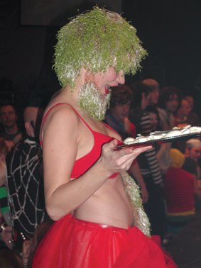

| Februar 2005 |
På scenen har hun to bøsser mellem benene. Den ene er til salt, den anden til peber. Hendes hår er af karse og hun døjer med skæl af kokosmel. Lene Leth Lebbe tilsætter nye ingredienser til kroppen. Det gjorde hende for nylig til HR&FRU dunst i Ungdomshuset.

Jeg har lige set hende for en god uges tid siden i Berlin. Her stod hun nytårsaften på en scene på Kinzo - en af byens ”hip-hotte homoklubber”, som jeg kunne have skrevet i et rigtigt livsstilsmagasin. Lene var eksalteret i ukontrolleret gogodans, mens de mest entusiastiske publikummer spiste havregrynskugler fra hendes BH, mens hun dryssede skæl af kokos ud over dem.
Denne søndag i januar står den på te og et par saltkiks på Lenes værelse i bofællesskabet ved Planetariet i København. Lene sprudler ikke, men er snottet. Men hvor hendes krop er slap, er hendes hoved det langt fra. På sovebriksen trækker hun benene op under sig og begynder veloplagt og overvejet at fortælle om sit show og den nyvundne titel som Hr. og Fru dunst
Noget andet
”Jeg havde været til nogle dunst-fester inden Hr. og Fru-dunstarrangementet. Jeg var vild med stemningen til dem, fordi de viste nye vej for opførsel til en fest. dunst-folkene bruger kroppen på alternative måder i et festlokale. Det skaber også alternative regler for andre folk i rummet. Jeg synes det bliver meget afslappet. Det ville jeg gerne prøve at være med til at bygge op”, fortæller Lene lige inden hun skruer ned for lyden af Peaches, der tydeligvis forstyrrer hendes tanker.
”Da jeg bestemte mig for at stille op var den første beslutning, at jeg ikke skulle være drag king. For så ville jeg bare blive sådan én. Jeg ville gerne lave noget andet. Noget, der ikke kunne kønsbestemmes. Noget dobbelt, der på én gang var både mand og kvinde og sexet og usexet. Noget, der på én gang er lækkert og ulækkert, er sværere for publikum at afvise eller tage helt til sig. På den måde kan de ikke slippe uden om det,” siger Lene og smiler let.
Madder over grænsen
Og hun har ret: Der er ingen udvej for publikum, når Lene Leth Lebbe er på scenen. Medmindre man forlader lokalet eller lukker øjnene. For Lene inddrager os, der kigger på, og gør os til en del af sin performance. Hun giver os mad. I Ungdomshuset var hverdagens æggemad med Lene på scenen. I første halvdel af sin performance kommer hun akavet og foroverbøjet på scenen.
Hun har hårdkogte æg i sine bukser og under nylonstrømperne på arme og ben gemmer hun små plastikposer med mayonnaise. De ligner bylder. Dem klipper hun hul på med en tang, så mayonnaisen løber ud. Hun laver æggemadder og trykker mayonnaisen ud på dem, og går fra scenen igen. Det er vammelt. Men de fleste kigger med – mange i begejstring.
I anden halvdel kommer hun kæk og rank selvsikker ind i rødt strutskørt og stiletter. Og flot lysegrønt hår, som er tre uger lang karse. Hun drysser salt og peber på æggemadderne fra to bøsser, der hænger under skørtet. Og klipper karse fra sit hår ud over madderne, spiser én selv og deler rundhåndet ud af resten, som en ivrigt opmærksom værtinde. Nogle publikummer tager imod snacken midt i festen. Andre fjerner sig fra scenekanten i væmmelse.
”Jo, det er ulækkert og grænseoverskridende - også for mig selv,” fortæller Lene om de reaktioner, hun oplever hos nogle publikummer. ”Men netop det at bevæge mig ud over grænsen er vigtigt for mig. Det er afslappende, når man bagefter tænker: ’Nåh, det var jo ikke så slemt, det var bare lidt mad.’ Jeg føler jeg at jeg stadig selv er med, og jeg kan da stadig spise en æggemad i det daglige.
Jeg har meget stor respekt for nogle af de performere, der har et dystert udtryk og for eksempel øver vold mod deres egen krop, uden at de bliver patetiske. Men det har jeg ikke lyst til. Jeg vil have humoren med, så min optræden får en dobbelthed.”
Let med Lebbe
For Lene er den dobbelthed politisk i og med den rykker ved grænser for opfattelsen af kroppen. Den drejer sig om køn, seksualitet og æstetik. Men hun er ikke belærende og regner ikke med at revolutionere med æggemadder. At hun er lesbisk – og har valgt at sætte betegnelsen Lebbe efter det navn – Lene Leth – som hun i forvejen synes lyder fjollet – har hun også overvejet grundigt. ”Jeg overvejede nogle mere glamourøse eller heftige kunstnernavne, men blev ved mit eget. Dels fordi jeg synes kombinationen lyder sjov og er ligetil. Dels fordi jeg så også sætter mig selv mere på spil. Publikum skal kun forholde sig til den krop, de ser på scenen, ikke et avanceret navn.”
Ny erfaring
Lene har studeret på Det fynske Kunstakademi og ved designskolen i København. Lige nu studerer hun interaktionsdesign på K3 ved Malmö Högskola. I sin performance trækker hun på sin viden fra studierne. Men at bruge kroppen i et show er en ny erfaring.
”Jeg er vant til, at de ting, jeg gør, kan og skal gøres om, inden resultatet foreligger. Jeg har selvfølgelig gennemtænkt mine idéer til en performance og prøvet dem af. Men når publikum endeligt er på, så er der kun én chance. Det kan ikke gøres om. Det er en risiko at løbe. For det kan gå galt. Det handler om at gennemføre det man har udtænkt, samtidigt med at man justerer alt efter publikum. Den interaktion er spændende at arbejde med. Jeg har tidligere været studerende på Det fynske Kunstakdemi og designskolen i København, og jeg trækker da på de ting jeg har lært og set. Men for første gang trækker jeg på min krop. Det er spændende at udvikle. Nu skal jeg bare lige over eftervirkningerne af mine to første optrædener nogensinde. De har fundet sted inden for to uger”, siger Lene og tager endnu en slurk at tekoppen.
Lene Leth Lebbe er fotograferet af 2Rosa
Forf. Lars Erik Frank
www.panbladet.dk/artikel/281
Print denne side